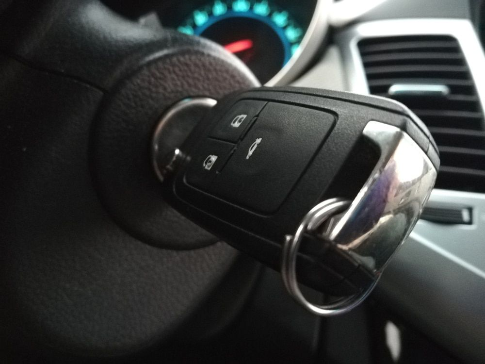

AT A GLANCE
At SPL Security Solutions, we understand how disruptive it can be to lose or damage your car keys.

Fast & Efficient Key Replacement
At SPL Security Solutions, we understand how disruptive it can be to lose or damage your car keys. That’s why we focus on providing fast, accurate duplication for a wide range of automotive keys at our fully equipped workshop.
Whether you need a spare key for peace of mind or a complete replacement for a lost or damaged one, our experienced team uses precise tools to deliver duplicates that work seamlessly with your vehicle. We also carefully inspect your existing key for signs of wear, helping you avoid potential problems before they arise, and ensuring every key meets the highest standards for quality and security.
Visit our Bundall location today to have your car keys duplicated.
Transponder & Speciality Keys
Modern vehicles often use transponder or speciality keys, which require advanced processes to duplicate correctly. At SPL Security Solutions, we handle many of these key types in-store, using the latest diagnostic equipment to program transponder chips so your new key syncs perfectly with your vehicle.
Our licensed technicians take care to test each key thoroughly, ensuring it performs just like the original. For more complex or high-security key designs, we follow strict duplication protocols to protect against unauthorised copies or compatibility issues. Whether you’re dealing with a faulty key or simply need a spare, our team is here to make the process straightforward and efficient.
Drop into our Bundall workshop today, and we'll help with your transponder or speciality key requirements.
Service Areas
Brisbane
Northern NSW